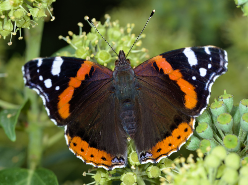

Red Admiral
Vanessa atalanta butterfly / moth

Dark butterfly with red wing-bands. Caterpillars feed on stinging nettle.
32 documented plant relationships, 2 of them as a specialist with no alternative.
sips nectar at
 Boreal YarrowAchillea borealis
Boreal YarrowAchillea borealis Douglas Goldman, some rights reserved (CC BY-SA), uploaded by Douglas Goldman") Canada GoldenrodSolidago canadensis
Canada GoldenrodSolidago canadensis Douglas Goldman, some rights reserved (CC BY-SA), uploaded by Douglas Goldman") ChokecherryPrunus virginiana
ChokecherryPrunus virginiana aarongunnar, some rights reserved (CC BY), uploaded by aarongunnar") DewberryRubus pubescens
DewberryRubus pubescens Tom Pollard, some rights reserved (CC BY), uploaded by Tom Pollard") Evening PrimroseOenothera biennis
Evening PrimroseOenothera biennis Douglas Goldman, some rights reserved (CC BY-SA), uploaded by Douglas Goldman") FireweedChamaenerion angustifolium
FireweedChamaenerion angustifolium Douglas Goldman, some rights reserved (CC BY-SA), uploaded by Douglas Goldman") Flat-topped GoldenrodEuthamia graminifolia
Flat-topped GoldenrodEuthamia graminifolia Michael J. Papay, some rights reserved (CC BY), uploaded by Michael J. Papay") Flat-topped White AsterDoellingeria umbellata
Flat-topped White AsterDoellingeria umbellata Alan Prather, some rights reserved (CC BY), uploaded by Alan Prather") Giant HyssopAgastache foeniculum
Giant HyssopAgastache foeniculum Thayne Tuason, some rights reserved (CC BY-SA)") Golden TickseedCoreopsis tinctoriaGumweedGrindelia squarrosa
Golden TickseedCoreopsis tinctoriaGumweedGrindelia squarrosa Joe-Pye WeedEutrochium maculatum
Joe-Pye WeedEutrochium maculatum eeyipes, some rights reserved (CC BY)") Marsh MarigoldCaltha palustris
Marsh MarigoldCaltha palustris Sarah Johnson, some rights reserved (CC BY), uploaded by Sarah Johnson") MeadowsweetSpiraea albaNorthern Black CurrantRibes hudsonianum
MeadowsweetSpiraea albaNorthern Black CurrantRibes hudsonianum Mary Krieger, some rights reserved (CC BY), uploaded by Mary Krieger") Palmate-leaved ColtsfootPetasites frigidus
Palmate-leaved ColtsfootPetasites frigidus Philadelphia FleabaneErigeron philadelphicusPink CorydalisCapnoides sempervirens
Philadelphia FleabaneErigeron philadelphicusPink CorydalisCapnoides sempervirens Douglas Goldman, some rights reserved (CC BY-SA), uploaded by Douglas Goldman") Purple-stemmed Tall Aster (Swamp Aster)Symphyotrichum puniceum
Purple-stemmed Tall Aster (Swamp Aster)Symphyotrichum puniceum bobkennedy, some rights reserved (CC BY-SA), uploaded by bobkennedy") Pussy WillowSalix discolor
Pussy WillowSalix discolor Matt Lavin, some rights reserved (CC BY-SA)") RabbitbrushEricameria nauseosa
RabbitbrushEricameria nauseosa Douglas Goldman, some rights reserved (CC BY-SA), uploaded by Douglas Goldman") Self-healPrunella vulgaris
Self-healPrunella vulgaris aarongunnar, some rights reserved (CC BY), uploaded by aarongunnar") Smooth AsterSymphyotrichum laeve
Smooth AsterSymphyotrichum laeve gwt2102, some rights reserved (CC BY)") Spreading DogbaneApocynum androsaemifolium
Spreading DogbaneApocynum androsaemifolium Stinging NettleUrtica gracilis subsp. gracilis
Stinging NettleUrtica gracilis subsp. gracilis Mary Krieger, some rights reserved (CC BY), uploaded by Mary Krieger") Western SnowberrySymphoricarpos occidentalis
Western SnowberrySymphoricarpos occidentalis tzeducation, some rights reserved (CC BY), uploaded by tzeducation") Wild BergamotMonarda fistulosaWild Black CurrantRibes americanum
Wild BergamotMonarda fistulosaWild Black CurrantRibes americanum Pohled 111, some rights reserved (CC BY-SA)") Wild ChivesAllium schoenoprasum
Wild ChivesAllium schoenoprasum Michael J. Papay, some rights reserved (CC BY), uploaded by Michael J. Papay") Willow AsterSymphyotrichum lanceolatum
Willow AsterSymphyotrichum lanceolatum